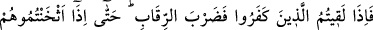
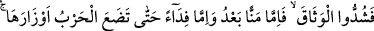
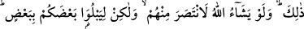
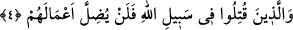

Allah’ın seni akranların içinden niçin seçtiğini ve onlar içinde seni neden üstün
tuttuğunun sebebini biliyor musun?» dedi. «Hayır, bilmiyorum Ey Allah’ın elçisi»
dedim. Şöyle buyurdu: «Sen sünnetlerime tâbi oldun, sâlihlere hürmet gösterdin,
kardeşlerine nasîhat ettin, ashâbımı ve ehl-i beytimi sevdin. Allah Teâlâ da bu sebeple
seni iyilerin (ebrâr) makamına ulaştırdı.»”
Sonra hak yola uymak, hak ehline uymakla mümkün olur. Çünkü ehl-i hak hakkı
gerçekleştirmede ve ona irşâd etmede Peygamberimiz (s.a.)’in vârisleridirler. Hak
ehline uyan hidâyet bulur. Bâtıl ehline uyan sapıtır. Bunlardan birincisi olan hak ehli
Allah’ın cemalinin ehlidir. Melek ona hizmetçidir. İkincisi olan bâtıl ehli ise Allah’ın
celal sıfatının ehlidir. Şeytan onun yardımcısıdır. Akıllı kişi hakka ve hak ehlinin
sohbetine dönmelidir. Allah Teâlâ şöyle buyuruyor: “Ey inananlar Allah’tan korkun
ve sadıklarla/doğrularla beraber olun.” (Tevbe 9/119)
Allah Teâlâ’dan bizleri hak ile hakka hâdim olanlardan kılmasını diliyoruz. Ve bizleri
batâletten, bâtıldan ve haktan kaymaktan korumasını istiyoruz. Zira bâkî olan Hak ancak
O’dur ve yalnız O’na kavuşulacaktır.
4. (Savaşta) İnkâr edenlerle karşılaştığınız zaman boyunlarını vurun. Nihâyet
onları iyice vurup sindirince bağı sıkıca bağlayın (onları esîr alın). Ondan sonra
artık ya lütfen bırakır veya karşılığında fidye alırsınız. Harb, ağırlıklarını
bırakıncaya (savaş sona erinceye) kadar (böyle yaparsınız). Allah dileseydi (kendisi)
onlardan öç alırdı, fakat sizi birbirinizle denemek için (size savaşı emrediyor).
Allah, kendi yolunda öldürülenlerin yaptıkları işleri zâyi etmeyecektir.
Ey Müslümanlar mâdem ki inkâr edenlerin işleri boşa çıkarılıp helâk ve hüsranda
oluyor, müminlerin durumu da salah ve felah üzeredir, öyleyse “(savaşta) inkâr
edenlerle karşılaştığınız zaman boyunlarını vurun.” Onları kılıç darbeleriyle öldürün.
“Nihâyet onları iyice vurup” birçoğunu öldürerek onları “sindirince bağı sıkıca
bağlayın (onları esir alın)” ve koruyun. “Ondan sonra artık ya” karşılığında mal,
para almaz yahut esir değişimi yapmaz “lutfen bırakır veya karşılığında” mal, para
alıp yahut esir değişimi yaparak “fidye alırsınız. Harb, ağırlıklarını” yâni harbin
kendisiyle kâim olduğu silah ve âletler çekilip “bırakıncaya (savaş sona erinceye)
kadar (böyle yaparsınız)” durum budur. “Allah dileseydi (kendisi)” yaygın ve salgın
bir ölüm, suda boğma, taş yağdıran fırtına, deprem, yere batırma gibi bazı imhâ ve helâk